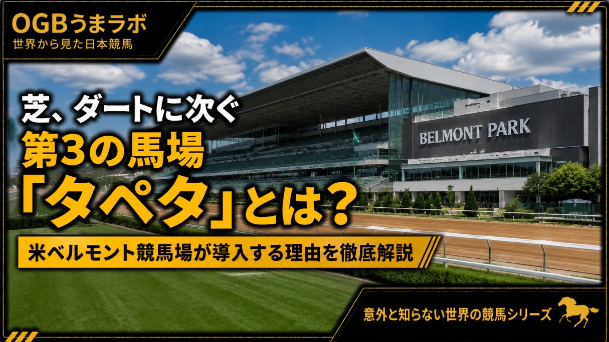

この記事は2026年7月6日にXで公開した原文を掲載しています。制度・数値などは公開当時の内容です。
【海外競馬ニュース】
芝、ダートに次ぐ第3の馬場「タペタ」とは？
米ベルモント競馬場が導入する理由
米国競馬を統括するニューヨーク競馬協会（NYRA）は6月19日、大規模改修中の #ベルモントパーク競馬場 に、新たな全天候型人工馬場「タペタ（Tapeta）」を整備したと発表しました。
新ベルモント競馬場には、
・メインダートコース
・芝コース2面
・タペタコース（1マイル）
が設置され、2026年9月18日に営業を再開する予定です。
今回の発表で注目されたのは、新スタンド以上に「タペタ馬場」が正式採用されたことでした。
■ なぜベルモントにタペタが必要なのか
背景には、132年の歴史を持つ #アケダクト競馬場 の閉鎖があります。
ニューヨーク競馬は長年、
・春～秋：ベルモント
・冬：アケダクト
という役割分担で開催されてきました。
しかしアケダクト競馬場は2026年6月で閉鎖され、今後はベルモントが年間を通じた開催の中心となります。
冬場でも安定した馬場状態を維持し、悪天候でも開催しやすくするため、その重要な役割を担うのがタペタ馬場です。
つまり今回の導入は、「新しい馬場を試してみよう」という話ではなく、ニューヨーク競馬全体を支えるインフラ整備の一環と言えます。
■ タペタとはどんな馬場？
タペタは、砂にワックスやゴム、繊維などを混ぜて作られる全天候型の人工馬場です。
最大の特徴は、
・雨の影響を受けにくい
・排水性が高い
・馬場状態が安定しやすい
・クッション性が高く故障リスク軽減も期待される
ことにあります。
芝でもダートでもない、まさに「第3の馬場」と呼ばれる存在です。
■ 世界では珍しくないタペタ
実は海外では、タペタは決して珍しい馬場ではありません。
現在も、
・カナダ・ウッドバイン競馬場
・英国・ニューカッスル競馬場
・英国・ウルヴァーハンプトン競馬場
・英国・サウスウェル競馬場
などで採用されています。
一方、日本では競走用として採用されておらず、JRAのトレーニングセンターにあるニューポリトラックなど、主に調教用として利用されています。
そのため、日本の競馬ファンにとっては馴染みの薄い馬場と言えるでしょう。
■ ドバイでも採用されたが、その後ダートへ
実はドバイ・メイダン競馬場も、2010年の開場当初はタペタを採用していました。
しかし、その後はダートへ変更されています。
変更理由としては、
・北米ダート馬との適性差
・世界最高峰レースとして各国の有力馬が参戦しやすい環境づくり
などが挙げられています。
つまり、タペタは優れた馬場である一方、世界中の競走体系とのバランスも考慮する必要がある馬場なのです。
■ 日本馬が走るなら、どんなタイプが向きそう？
現状では推測しか出来ませんが、海外レースを見る限りでは、
・純粋なパワー型ダート馬
・切れ味だけで勝負する芝馬
よりも、
「芝でもダートでも一定の実績を残せる持続力タイプ」
が適応しやすい可能性があると考えられています。
実際の適性は血統や走法によっても大きく変わるため、今後ベルモントでレースが始まれば、日本馬との比較も注目されそうです。
芝とダートだけではない、「第3の馬場」。
ベルモント競馬場への導入は、世界の競馬場が安全性や開催継続性を重視する時代へ変わりつつあることを象徴するニュースと言えるかもしれません。
このニュースやベルモント競馬場の運営状況については、今後も引き続き追っていく予定です。
#タペタ #人工馬場
2026.7.6
うまラボ編集部
元記事：Xで公開した記事